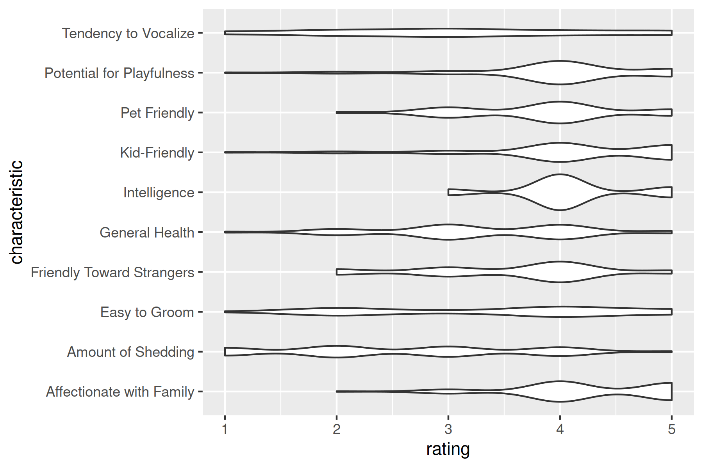
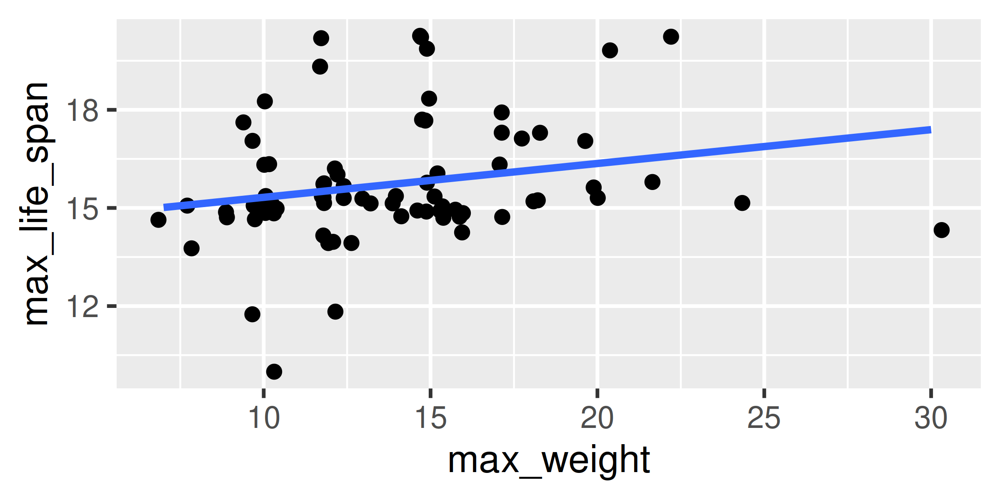

Purrr
The power of nested lists
Contents

Follow along: https://bit.ly/850-purrr-slides
Lists and Vectors
A vector is a 1-dimensional data structure that contains several things that are all the same type
We index vectors using single brackets
Lists and Vectors
A list is a 1D data structure that contains … anything.
$first
[1] TRUE TRUE FALSE FALSE
$second
$second[[1]]
[1] "Another" "list"
$second[[2]]
[1] "With" "2" "vectors"
$third
Call:
lm(formula = numeric_vec ~ 1)
Coefficients:
(Intercept)
3.25
$fourth
NULL
[[5]]
[1] "Unnamed stuff"Is this a list or a vector?

Lists and Vectors
Lists can be indexed in 3 different ways:
Returns a list with the element inside
Returns the contents
of the element
Try it out
Create a vector of the first, fifth, and 26th cat breeds in the list
Stretch goal: Create a vector containing the rating for each cat breed above’s affection with its family
Try it out Solution
Create a vector of the first, fifth, and 26th cat breeds in the list
[1] "Abyssinian" "American Shorthair" "Colorpoint Shorthair"Create a vector containing the rating for each cat breed above’s affection with its family
Cat break!
Setup
What’s in the list?
$name
[1] "Affenpinscher"
$image_link
[1] "https://api-ninjas.com/images/dogs/affenpinscher.jpg"
$life_expectancy
$life_expectancy$min
[1] 12
$life_expectancy$max
[1] 15
$height
$height$sex
[1] "male" "female"
$height$range
$height$range[[1]]
$height$range[[1]]$max
[1] 11.5
$height$range[[1]]$min
[1] 9
$height$range[[2]]
$height$range[[2]]$max
[1] 11.5
$height$range[[2]]$min
[1] 9
$weight
$weight$sex
[1] "male" "female"
$weight$range
$weight$range[[1]]
$weight$range[[1]]$max
[1] 10
$weight$range[[1]]$min
[1] 7
$weight$range[[2]]
$weight$range[[2]]$max
[1] 10
$weight$range[[2]]$min
[1] 7
$characteristics
$characteristics$good_with_children
[1] 3
$characteristics$good_with_other_dogs
[1] 3
$characteristics$shedding
[1] 3
$characteristics$grooming
[1] 3
$characteristics$drooling
[1] 1
$characteristics$coat_length
[1] 2
$characteristics$good_with_strangers
[1] 5
$characteristics$playfulness
[1] 3
$characteristics$protectiveness
[1] 3
$characteristics$trainability
[1] 3
$characteristics$energy
[1] 3
$characteristics$barking
[1] 3Introduction to map
map iterates through each item in the list and applies a function.

Introduction to map
If you don’t supply a function, map will default to the index function and pull items out by name or location.
[[1]]
[1] "Affenpinscher"
[[2]]
[1] "Afghan Hound"
[[3]]
[1] "Airedale Terrier"
[[4]]
[1] "Akita"
[[5]]
[1] "Alaskan Klee Kai"
[[6]]
[1] "Alaskan Malamute"
[[7]]
[1] "American Bulldog"
[[8]]
[1] "American English Coonhound"
[[9]]
[1] "American Eskimo Dog"
[[10]]
[1] "American Foxhound"Introduction to map
map_xxx variants allow you to specify the type of output you want back.
[1] "Affenpinscher" "Afghan Hound"
[3] "Airedale Terrier" "Akita"
[5] "Alaskan Klee Kai" "Alaskan Malamute"
[7] "American Bulldog" "American English Coonhound"
[9] "American Eskimo Dog" "American Foxhound" and will return an error if the output is the wrong type:
Introduction to map
map and map_xxx functions are pipe friendly:
dogs[1:10] %>%
map_chr("name") %>% # get names out and convert to vector
tibble(breed = .) %>% # Create a table
mutate(length = map_int(breed, nchar)) # get name length in new col# A tibble: 10 × 2
breed length
<chr> <int>
1 Affenpinscher 13
2 Afghan Hound 12
3 Airedale Terrier 16
4 Akita 5
5 Alaskan Klee Kai 16
6 Alaskan Malamute 16
7 American Bulldog 16
8 American English Coonhound 26
9 American Eskimo Dog 19
10 American Foxhound 17mutate + map_xxx are very useful for data cleaning
Introduction to map
Try it out
Pull out a character vector of the image URLs for each cat breed
As a bonus, if you have the magick package installed, run this code on your result:
Try it out Solution
Pull out a character vector of the image URLs for each cat breed
Introduction to map
What if we want to pull out multiple values?
[ is a function!
(Or use magrittr::extract if it makes you uncomfortable)

Introduction to map
We can even get a data frame, as long as each entry has only one line
Try it out!
Create a data frame of cat information using the single-length items in the cats object.
Try it out Solution
Create a data frame of cat information using the single-length items in the cats object.
# A tibble: 82 × 3
breed image short…¹
<chr> <chr> <chr>
1 Abyssinian https://cattime.com/assets/uploads/2011/12/file_2… A love…
2 Aegean https://cattime.com/assets/uploads/2019/11/aegean… The Ae…
3 American Bobtail https://cattime.com/assets/uploads/2011/12/file_2… With h…
4 American Curl https://cattime.com/assets/uploads/2011/12/file_2… The Cu…
5 American Shorthair https://cattime.com/assets/uploads/2011/12/file_2… The ad…
6 American Wirehair https://cattime.com/assets/uploads/2011/12/file_2… Sproin…
7 Aphrodite Giant https://cattime.com/assets/uploads/2019/12/aphrod… The Ap…
8 Arabian Mau https://cattime.com/assets/uploads/2020/01/arabia… The Ar…
9 Asian https://cattime.com/assets/uploads/2020/03/asian-… The As…
10 Australian Mist https://cattime.com/assets/uploads/2020/01/austra… The Au…
# … with 72 more rows, and abbreviated variable name ¹short_descCreating (and using) List columns
List columns are columns in a data frame that contain a list instead of a simple data type.
# A tibble: 281 × 2
name characteristics
<chr> <list>
1 Affenpinscher <tibble [1 × 12]>
2 Afghan Hound <tibble [1 × 12]>
3 Airedale Terrier <tibble [1 × 12]>
4 Akita <tibble [1 × 12]>
5 Alaskan Klee Kai <tibble [1 × 12]>
6 Alaskan Malamute <tibble [1 × 12]>
7 American Bulldog <tibble [1 × 12]>
8 American English Coonhound <tibble [1 × 12]>
9 American Eskimo Dog <tibble [1 × 12]>
10 American Foxhound <tibble [1 × 12]>
# … with 271 more rowsCreating (and using) List columns
Creating List columns
We could write a function to format the list columns the way we want them to be…
like, maybe in a nice data frame?
fix_characteristics <- function(x)
tibble(characteristic = names(x),
rating = as.numeric(x))
fix_characteristics(dogs[[1]]$characteristics)# A tibble: 12 × 2
characteristic rating
<chr> <dbl>
1 good_with_children 3
2 good_with_other_dogs 3
3 shedding 3
4 grooming 3
5 drooling 1
6 coat_length 2
7 good_with_strangers 5
8 playfulness 3
9 protectiveness 3
10 trainability 3
11 energy 3
12 barking 3Creating List columns
Then, we can mutate a list-column using map to apply our function to every entry!
dog_df$characteristics <- map(dogs, "characteristics") %>%
map(fix_characteristics)
select(dog_df, name, characteristics)# A tibble: 281 × 2
name characteristics
<chr> <list>
1 Affenpinscher <tibble [12 × 2]>
2 Afghan Hound <tibble [12 × 2]>
3 Airedale Terrier <tibble [12 × 2]>
4 Akita <tibble [12 × 2]>
5 Alaskan Klee Kai <tibble [12 × 2]>
6 Alaskan Malamute <tibble [12 × 2]>
7 American Bulldog <tibble [12 × 2]>
8 American English Coonhound <tibble [12 × 2]>
9 American Eskimo Dog <tibble [12 × 2]>
10 American Foxhound <tibble [12 × 2]>
# … with 271 more rowsTry it out
Create a list column that contains a data frame of characteristics for each cat breed
Try it out Solution
Pull out a character vector of the image URLs for each cat breed
cat_df$characteristics <- map(cats, "characteristics") %>%
map(fix_characteristics)
select(cat_df, breed, characteristics)# A tibble: 82 × 2
breed characteristics
<chr> <list>
1 Abyssinian <tibble [8 × 2]>
2 Aegean <tibble [10 × 2]>
3 American Bobtail <tibble [10 × 2]>
4 American Curl <tibble [9 × 2]>
5 American Shorthair <tibble [9 × 2]>
6 American Wirehair <tibble [9 × 2]>
7 Aphrodite Giant <tibble [10 × 2]>
8 Arabian Mau <tibble [10 × 2]>
9 Asian <tibble [10 × 2]>
10 Australian Mist <tibble [10 × 2]>
# … with 72 more rowsWorking with List-columns
We can unnest this column:
each row in the characteristics df gets a row in the main df
(# characteristics rows for each breed)
# A tibble: 3,372 × 3
name characteristic rating
<chr> <chr> <dbl>
1 Affenpinscher good_with_children 3
2 Affenpinscher good_with_other_dogs 3
3 Affenpinscher shedding 3
4 Affenpinscher grooming 3
5 Affenpinscher drooling 1
6 Affenpinscher coat_length 2
7 Affenpinscher good_with_strangers 5
8 Affenpinscher playfulness 3
9 Affenpinscher protectiveness 3
10 Affenpinscher trainability 3
# … with 3,362 more rowsWorking with List-columns
Try it out
Unnest the characteristics for each cat breed and create a (different) appropriate plot of the distribution of each characteristic.
Try it out Solutions
Unnest the characteristics for each cat breed and create a (different) appropriate plot of the distribution of each characteristic.
Try it out Solution
Unnest the characteristics for each cat breed and create a (different) appropriate plot of the distribution of each characteristic.
Try it out (#2)
Write a function that will convert the cat statistics into a data frame.
Include columns for min_life_span, max_life_span, min_weight, max_weight, length, and origin.Test your function on one or two cat breeds
Use mutate + map to create a list-column with the statistics.
Is there a relationship between breed size and life span?
Try it out (#2) Solution
cat_stats <- function(x) {
tibble(
min_life_span = str_extract(x[[1]], "^\\d{1,}") %>% parse_number,
max_life_span = str_extract(x[[1]], "to \\d{1,}") %>% parse_number,
min_weight = str_extract(x[[3]], "^\\d{1,}") %>% parse_number,
max_weight = str_extract(x[[3]], "to \\d{1,}") %>% parse_number,
length = x[[2]],
origin = x[[4]]
)
}
cat_stats(cats[[1]]$stats)# A tibble: 1 × 6
min_life_span max_life_span min_weight max_weight length origin
<dbl> <dbl> <dbl> <dbl> <chr> <chr>
1 9 15 6 10 12 to 16 inches Southeast A…Try it out (#2) Solution
Ways to use purrr
Read in multiple files, fit a model to each dataset
Create lists of predictor variables, fit a model with those variables to the same dataset and compare
Keep your data stored in a single data frame, only accessing the pieces you need at any given time
Run simulations and store the simulation results in a column
Store the data, data cleaning steps, and model results in a single data frame
Beyond map
map2takes two inputs,.xand.y, and appliesfunction(.x, .y)to each combinationpmaptakes a list of inputs and applies a function to each combinationwalktakes inputs and applies a function to them but doesn’t store results
(useful for e.g. printing out plots)lots of other helper functions in
purrr
pluck,chuck,transpose, …
unlink(“cat-breeds.Rdata”, “dog-breeds.Rdata”)